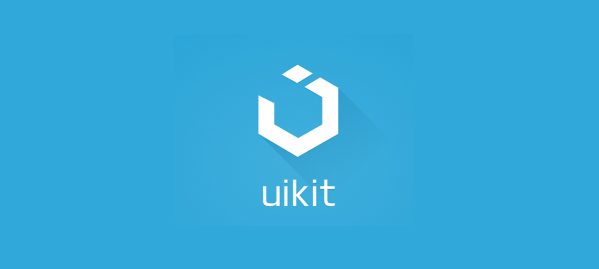

UIkit
Что такое UIkit?
UIkit — это мощный и гибкий фронтенд-фреймворк, созданный для разработки современных веб-интерфейсов. Он предоставляет набор компонентов, стилей и инструментов, которые позволяют разработчикам быстро и эффективно создавать адаптивные веб-приложения и сайты.
Основные характеристики UIkit
- Компоненты:
- Адаптивный дизайн:
- Темизация:
- Модульность:
- Поддержка JavaScript:
UIkit включает в себя множество преднастроенных компонентов, таких как кнопки, формы, навигация и модальные окна, которые можно легко интегрировать в проекты.
Фреймворк поддерживает мобильные и десктопные устройства с помощью адаптивной сетки и гибких макетов, позволяя вашему контенту выглядеть хорошо на любом экране.
UIkit позволяет настраивать внешний вид компонентов с помощью простых в использовании переменных CSS, что упрощает процесс создания индивидуальных тем.
UIkit построен на принципах модульности, что позволяет подключать только те компоненты, которые вам нужны, минимизируя размер вашего проекта.
Фреймворк включает в себя JavaScript-компоненты для управления интерактивностью, такие как слайдеры, табы и выпадающие меню, что упрощает создание динамичных интерфейсов.
Почему выбрать UIkit?
UIkit предлагает разработчикам мощный набор инструментов для создания адаптивных и современных интерфейсов. С его помощью вы можете быстро реализовать сложные макеты и обеспечить отличный пользовательский опыт без лишних затрат времени на написание стилей.
Для получения дополнительной информации и доступа к документации, пожалуйста, посетите официальный сайт UIkit.